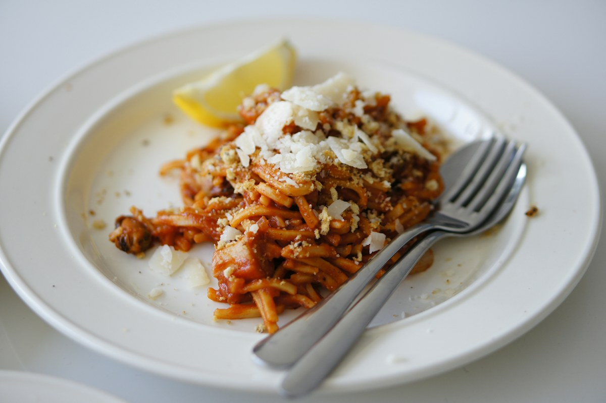

20 minutes · easy · serves 2–3
Lemon herb pasta
A bright, silky pasta made from pantry staples, fresh lemon, and parsley. Save a little pasta water: it helps the sauce cling to every strand.

Ingredients
- 225 g dried spaghetti or linguine
- 2 tablespoons olive oil
- 2 garlic cloves, thinly sliced
- 1 lemon, zest and 2 tablespoons juice
- ¼ teaspoon fine salt, plus more for the water
- ⅛ teaspoon black pepper
- ¼ cup finely grated Parmesan (optional)
- ¼ cup chopped fresh parsley
Method
- Bring a large pot of salted water to a boil. Cook the pasta according to its package directions until just tender.
- Before draining, reserve about ½ cup of the pasta cooking water. Drain the pasta.
- While the pasta cooks, warm the olive oil in a wide pan over low heat. Add the garlic and cook for about 1 minute, until fragrant but not browned.
- Add the lemon zest, lemon juice, pepper, and ¼ cup reserved pasta water. Stir, then add the drained pasta.
- Toss for 1–2 minutes, adding a splash more pasta water if the pan looks dry. Turn off the heat; fold in parsley and Parmesan, if using. Taste and adjust seasoning.
- Serve straight away with extra parsley and lemon zest.